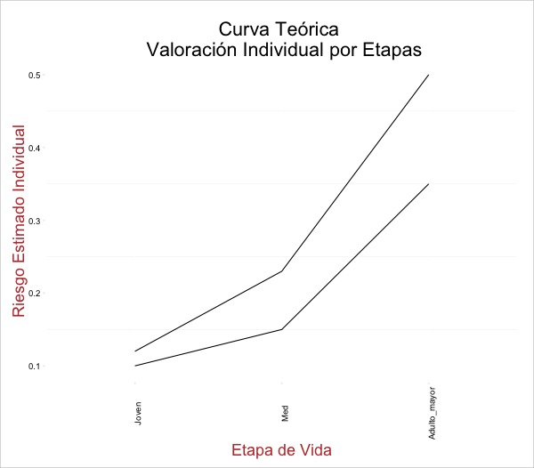

Resumen Ejecutivo
De acuerdo con el plan estrategico de Aseguradora Patrimonial Vida de “incursionar en el mercado de Seguros Individuales mediante el desarrollo de nuevos productos”. Este estudio preliminar inicia el proceso de:
- Descubrir y definir nichos de potenciales clientes
- Generar un modelo para identificar, en base a definición, a potenciales clientes
- Crear oferta de productos para potenciales clientes
Repaso
Los siguientes son puntos iniciales a considerar en la propuesto de nuevos productos.
-
El consumidor (especialmente menor a 40 años) es más propenso a buscar mejores precios y en más lugares. Los productos por lo tanto deben diferenciarse dramáticamente de los productos “commodities”. (missing reference)
-
El mercado busca esquemas de precios más directos y sencillos. (missing reference)
-
Los productos a segmentos específicos deben atender la necesidad de sencillez.
In the U.S., life insurance companies have traditionally paid little attention to market segmentation, but there is clearly an opportunity for a low-cost, low-hassle provider to grab considerable share of wallet among consumers, especially ones under 40.
(missing reference) -
La forma de empaquetar y presentar precios del paquete no importa al momento de vender un producto de seguro a personas inexperimentadas (missing reference).
-
Como es de esperarse, numerosos estudios encuentran una relación positiva entre etapas de vida particulares y la demanda por seguros, particularmente casarse, tener un primer hijo o sufrir del primer desempleo 1.
-
Tanto estudios como datos oficiales muestran relación estrecha entre nivel de ingreso y demanda por seguros.
-
Se proponen vías más concretas de investigación adicional.
Caracterización Básica
Como exploración inicial, analizamos el gasto general de los hogares en México, por décil de ingreso. Los datos provienen de los tabulados básicos de la ENIGH (2014 y 2012) (“Instituto Nacional de Estadística y Geografía,” 2015) 2.
Observamos que la mayoría (68.84%) de los hogares con seguros médicos 3 están distribuidos en los déciles IX y X, es decir el 20% de la población con mayores ingresos.

En forma tabular para 2014:
| Decil | Hogares_con_Gasto | Porcentaje_Hogares | Porcentaje_Mercado |
|---|---|---|---|
| D1 | 11097 | 0.35 | 3.69 |
| D2 | 10791 | 0.34 | 3.59 |
| D3 | 3793 | 0.12 | 1.26 |
| D4 | 4517 | 0.14 | 1.50 |
| D5 | 10704 | 0.34 | 3.56 |
| D6 | 8083 | 0.26 | 2.69 |
| D7 | 25363 | 0.80 | 8.43 |
| D8 | 19527 | 0.62 | 6.49 |
| D9 | 52498 | 1.66 | 17.45 |
| D10 | 154559 | 4.88 | 51.36 |
En cuánto a gasto, la composición es todavía más marcada en el pico de la pirámide: aproximadamente 78% del mercado se encuentra concentrado en el último décil.
| Decil | Gasto_en_Miles | Porcentaje_Gasto | Porcentaje_Mercado |
|---|---|---|---|
| D1 | 3927.47 | 0.02 | 0.19 |
| D2 | 5204.91 | 0.01 | 0.25 |
| D3 | 286.17 | 0.00 | 0.01 |
| D4 | 2797.21 | 0.01 | 0.13 |
| D5 | 5945.15 | 0.01 | 0.29 |
| D6 | 9948.08 | 0.01 | 0.48 |
| D7 | 147865.74 | 0.19 | 7.12 |
| D8 | 46396.82 | 0.05 | 2.24 |
| D9 | 227362.18 | 0.18 | 10.95 |
| D10 | 1626135.78 | 0.63 | 78.34 |
Aún así, en el décil más alto, solamente el 4.88% de los hogares reporta un gasto en el rubro de seguros médicos. La categoría no es necesariamente seguros de vida, pero la tendencia y sus implicaciones es interesante.
El gasto promedio en los últimos 10 deciles se redondea a: $10,521 pesos (décil X) por hogar, $4,330 (décil IX) y $2,376 (décil VIII). Claramente, se tratan de datos obtenidos mediante una encuesta con poco diseño para capturar este efecto, pero aún así podemos intuir que el décil X pagaría poco más del doble por prima que un escalón abajo en la pirámide.
Para 2012:
| Decil | Hogares_con_Gasto | Porcentaje_Hogares | Porcentaje_Mercado |
|---|---|---|---|
| D1 | 16284 | 0.52 | 5.09 |
| D2 | 7980 | 0.25 | 2.50 |
| D3 | 12274 | 0.39 | 3.84 |
| D4 | 6227 | 0.20 | 1.95 |
| D5 | 38903 | 1.23 | 12.17 |
| D6 | 7618 | 0.24 | 2.38 |
| D7 | 13455 | 0.43 | 4.21 |
| D8 | 38698 | 1.23 | 12.10 |
| D9 | 72780 | 2.31 | 22.76 |
| D10 | 105522 | 3.34 | 33.00 |
Comparando ambos periodos, observamos un incremento sustancial en el porcentaje de hogares pagando seguros en el espectro más alto (10% con más ingresos). El porcentaje en los déciles más abajo (VIII y IX) cae durante el mismo periodo.

Observamos la mismo información en forma tabular:
| Decil | P_Hogares2012 | P_Hogares2014 |
|---|---|---|
| D1 | 0.5178926 | 0.3517938 |
| D2 | 0.2549074 | 0.3415864 |
| D3 | 0.3895801 | 0.1199382 |
| D4 | 0.1975767 | 0.1427443 |
| D5 | 1.2326925 | 0.3386809 |
| D6 | 0.2419875 | 0.2557046 |
| D7 | 0.4269454 | 0.8011060 |
| D8 | 1.2261968 | 0.6175780 |
| D9 | 2.3061297 | 1.6576047 |
| D10 | 3.3435933 | 4.8818229 |
Se puede ver la metodología completa aquí
Pricing
De acuerdo con un experimento elaborado en Suiza (missing reference) entre jovenes de 25 a 35 años, los participantes más experimentados en la compra de instrumentos financieros preferían productos empaquetados, mientras que los menos experimentados no veían diferencia entre ambas propuestas.
- Para el caso mexicano, esperaríamos que incluso los más “experimentados” estén en un nivel de conocimiento menor al de un suizo “no experimentado”.
Determinantes de demanda
Los factores que influyen en la demanda por seguros de vida han sido en enfoque de literatura económica por muchos años 4, aunque se ha dado en terminos generales (a nivel macro) o por países específicos.
De acuerdo con 29 estudios de diferentes países y circunstancias, el ingreso resulta como la variable más explicativa a través de todos los escenarios: en 13 de 15 estudios mostró una relación positiva. Seguida estan los bienes netos, otra medición de riqueza, que son significativamente positivos en 9 de 12 estudios. La tasa de dependencia, definida como personas proveedoras en el hogar sobre dependientes directos mantiene una relación positiva con la demanda por seguros de vida en 6 de 9 estudios.
| Variable | Positiva | Negativa | Sin_efecto |
|---|---|---|---|
| Ingreso | 13 | 1 | 1 |
| Ingreso_hogar | 1 | 0 | 0 |
| Bienes_netos | 9 | 1 | 2 |
| Precio | 0 | 2 | 0 |
| Inflación | 2 | 1 | 1 |
| Precios_esperados | 1 | 1 | 0 |
| Seguridad_social | 2 | 3 | 1 |
| Edad | 3 | 4 | 6 |
| Educación | 6 | 3 | 0 |
| Tasa_dependencia | 6 | 2 | 1 |
| Genero | 1 | 0 | 0 |
| Estatus_matrimonial | 0 | 2 | 2 |
| Poblacion_local | 1 | 0 | 0 |
| Precios_esperados_personal | 0 | 1 | 0 |
## Vías de exploración adicional
En vista a lo anterior, se proponen una serie de vías de exploración adicional para crear un producto (o modelo) en vista de alguna escogida. Estos productos se pueden resumir en:
- Front-loading con beneficios
- One-stop shops
- Seguros como fondos corporativos
- Microseguros
- Life-settlement como seguros de desempleo
A continuación una pequeña exploración de cada uno.
## Front-loading con beneficios
Como es bien conocido, la mayoría de las polizas de seguro de vida hacen uso del front-loading:
Front-loading implies that policyholders of long-term life insurance policies, especially those with impaired health, often have locked in premiums that are much more favorable than what they could obtain in the spotmarket.
(missing reference)
Sin embargo, como menciona (missing reference) los clientes con contratos en “albercas” de riesgo, tienden a cambiarse por etapa de vida, dependiendo de su valoración de riesgo individual.
El cliente en el tiempo cero (edad corta) tiene una valoración de su riesgo “r” que es parecida a todos los demás clientes en esa misma etapa.
A medida que el cliente obtiene más información sobre su estado de salud (edad adulta), el cliente tiene mejor valoración de su riesgo. La diferencia entre su valor y lo pagado en el seguro puede ser negativa (el seguro paga más de lo que el considera “justo”) o positiva (el seguro paga menos).
Cuando la diferencia es positiva, el cliente tiende a buscar otro asegurador (volviendose el seguro más semejante a un producto “commodity”).

Tras “aprender” su estado de salud en un tiempo posterior (el tiempo dos en un mundo de dos tiempos), el consumidor tiene tres opciones: (1) continuar con su contrato, (2) buscar otro contrato, (3) quedarse sin contrato alguno.
Si el consumidor tiene un perfil de riesgo menor al actuarialmente justo en su contrato, el efecto de que escoja la segunda opción es doblemente perjudicial para la aseguradora:
- El riesgo promedio del portafolio incrementa (solo se quedan los que, según ellos, tienen riesgo alto)
- Se pierden clientes a aseguradoras con precios menores (generalmente también las más grandes)
Para evitar esto, (missing reference) indica que se debe crear una barrera que dificulta el proceso de salirse de la poliza.
## One-stop shops
En línea con lo previo, un “one-stop shop” (especie de tienda de conveniencia) para productos de seguros apela a consumidores “…” (missing reference).
En este sentido, se consideran especialmente intuitivas las tasas o contratos de grupos. Una de las ventajas de agrupar se traducen a los
group markets may be more prevalentbecause of their ability to deal with informational asymmetries.
No obstante, el problema con las tasas de grupo es que generalmente se segmentan en base
Seguros como fondos corporativos
In the United States business environment, corporate-owned lifeinsurance (COLI) has emerged as a popular corporate finance tool. Companies often purchase institutionally priced or retail-priced life insurance policies on their executives and/or owners, and maintain these policies as corporate assets. In essence, these are key person policies targeted at providing financing for thecompany's long-term obligations.
(missing reference)
Microseguros
Productos enfocados a segmentos tradicionalmente excluidos de la cadena financiera, pero no necesariamente en pobreza extrema.
-
Productos baratos, con pocos beneficios y componentes de cobranza mixtos.
-
De acuerdo con los datos del CONEVAL, un mercado de aproximadamente 31.5 millones de personas en el 2014, concentrada en terminos de población en los estados de México (60.6% de la población), Distrito Federal (46.2%) y Veracruz (68.45%).
-
Países cn experiencia en estos productos: Brasil, Nigería, Ghana.
Life-settlement como seguros de desempleo
Fuentes
- <!DOCTYPE html>
Instituto Nacional de Estadística y Geografía. (2015). Retrieved from http://www.inegi.org.mx/
Notas
-
(missing reference) y (missing reference) repasan estudios de manera considerable. ↩
-
Expandidos por factores de estimaciones CONAPO. ↩
-
La categorización de seguro médico segun la Clasificación Nacional de Gasto incluye los rubros J071 (Cuotas a compañías de seguros) y N009, más no es exhaustivo. ↩
-
Diferentes estudios encuentran relación nula pero en el agregado. Datos panel en (missing reference) muestran mejor el panorama. ↩